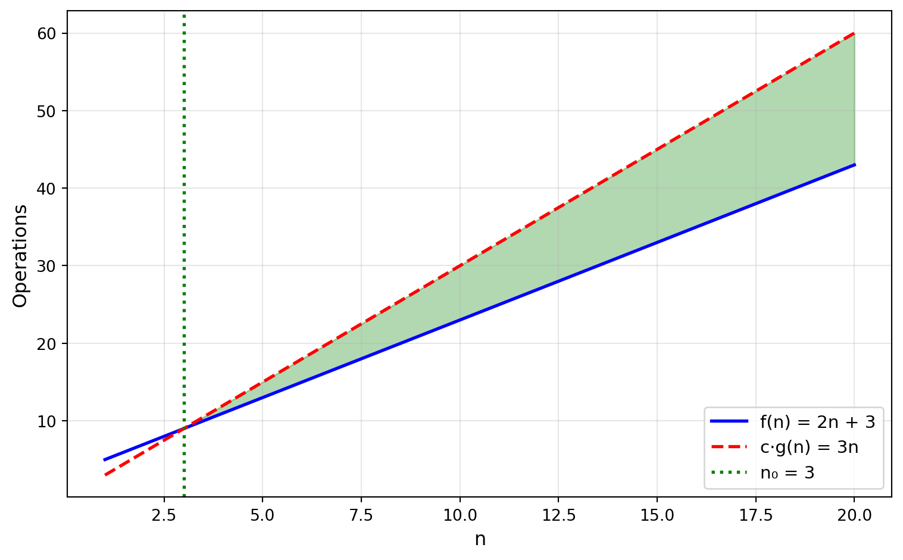

The Hierarchy of Speed
Week 2, Monday
January 12, 2026
Announcements
- Labs begin this week!
- Monday 1-3pm or Tuesday 4-6pm
Warm-up: Code Analysis
Rules
For \(T(n)\), the running time of an algorithm on input of size \(n\)…
- Constants don’t matter: \(5n = O(n)\)
- Lower terms don’t matter: \(n^2 + n = O(n^2)\)
- Log base doesn’t matter: \(log_2 n = O(log_{10}n)\)
Example 1
| 0 | 1 | 2 | 3 | 4 | 5 | 6 | 7 | 8 | 9 | 10 | 11 |
|---|---|---|---|---|---|---|---|---|---|---|---|
| 3 | 7 | 2 | 9 | 1 | 8 | 4 | 6 | 5 | 2 | 7 | 3 |
- Python questions?
- What’s the worst-case running time?
Example 2
For \(n = 6\):
What are the values of
iandjfor the 17th element counted?What are the values of
iandjfor the 32nd element counted?What’s the worst-case running time?
Example 3
For \(n = 6\):
What are the values of
iandjfor the 4th element counted?What are the values of
iandjfor the 12th element counted?What’s the worst-case running time?

From Last Week
The Two Pillars
- Correctness — Does it work?
- Efficiency — How fast?
The Analysis Recipe
- Establish the case — usually worst case
- Analyze the function — count operations for that case
- State the bound:
- \(\Theta\) (or “tight \(O\)”) if you know it’s exact
- \(O\) if you’re only claiming an upper bound
- \(\Omega\) if you’re only claiming a lower bound
The Hierarchy
Big-\(O\) is a Set
\(O(g(n))\) is the set of all functions \(f(n)\) satisfying the definition.
\[O(n) = \{f(n) : \exists c > 0, n_0 \geq 0 \text{ such that } f(n) \leq c \cdot n \text{ for all } n \geq n_0\}\]
The Ladder
\[O(1) \subset O(\log n) \subset O(n) \subset O(n \log n) \subset O(n^2) \subset O(2^n)\]
Each class contains all the ones to its left.
A Common Abuse of Notation
We write: \(\quad 4n + 2 = O(n)\)
We mean: \(\quad 4n + 2 \in O(n)\)
True or False?
- \(3n + 2 \in O(n)\)
- \(3n + 2 \in O(n^2)\)
- \(n^2 \in O(n)\)
- \(5 \in O(1)\)
- \(5 \in O(n)\)
What Big-\(O\) Actually Tells Us
Consider \(T(n) = 3n^2 + 5n + 7\). What happens when \(n\) doubles?
The Doubling Test
| Class | When \(n\) doubles, time… |
|---|---|
| \(O(1)\) | stays the same |
| \(O(\log n)\) | increases by a constant |
| \(O(n)\) | doubles |
| \(O(n \log n)\) | slightly more than doubles |
| \(O(n^2)\) | quadruples |
| \(O(2^n)\) | squares (!!) |
The Practical Classes
\(O(1)\): Constant
“No matter how big the input, same time.”
\(O(\log n)\): Logarithmic
\(O(n)\): Linear
\(O(n \log n)\): Linearithmic
\(O(n^2)\): Quadratic
\(O(2^n)\): Exponential
Racing Algorithms
The Setup
The Race
What Happened
Worst case: \(\Theta(n^2) \to \Theta(n)\)
The set provides \(O(1)\) lookup.
When Does It Matter?
The Crossover
The Lesson
Small data: write clear code.
Big data: Big-O is destiny.
Galactic Pizza
Two Ways to Compute the Mean
Same Big-\(O\), Different Speed
Both touch every row: \(O(n)\)
But:
- Vectorized: tiny constants (compiled C)
- Python loop: large constants (interpreter overhead)
What’s Next
This Week’s Arc
- Monday (today): The hierarchy — feel the difference
- Tuesday video: Loop invariants — how to prove correctness
- Wednesday: Binary search — the power of sorted data + proof
The Twenty Questions Puzzle
I’m thinking of a number between 1 and 1,000,000.
You can ask yes/no questions.
What’s your guaranteed winning strategy?
Questions?
The Definition
f(n) is O(g(n)) if there exist constants c > 0 and n₀ ≥ 0 such that:
\[f(n) \leq c \cdot g(n) \quad \text{for all } n \geq n_0\]
Picture

Other Notations
| Notation | Meaning |
|---|---|
| O(g(n)) | ≤ c·g(n) — upper bound |
| Ω(g(n)) | ≥ c·g(n) — lower bound |
| Θ(g(n)) | both — tight bound |
Prove It
Show that 3n² + 5n + 2 = O(n²)